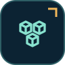
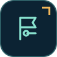
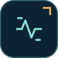

Responsibilities & capabilities
This is a research contract. An implementation, tag or icon alone does not establish that every listed capability is shipped or verified.
- ADM-01Independent installation and multiple panels
- ADM-02Host-owned identity and scope
- ADM-03Resource, query and field schemas
- ADM-04Tables and forms
- ADM-05Authorized actions
- ADM-06Default HTML renderer
- ADM-07Design tokens and accessibility
- ADM-08Optional Inertia/custom rendering
- ADM-09Widgets and module contributions
- ADM-10Operations and upgrade experience
Where this component stops
Owner-named administration composition. Reuse independent security/domain packages and renderer contracts; do not rebuild a monolithic admin engine. The old independent-package premise is superseded; ADM requirements are retained.
Model & lifecycle
Typed contracts, owned persistence and configuration are preserved in SOURCE_REFERENCE.md, original sections 5–6. Adapt to the actual implementation; these are not applied migrations.
Current host identity and scope -> resource/query policy -> authorized typed page model -> renderer. Actions revalidate actor, scope, input and revision before calling the domain use case; partial results stay visible.
Dependencies, deliberately chosen
Native Goravel capabilities
- Route
- View
- Validation
- Auth/Gate
- Storage
- Events
- Log
Go & candidate adapters
- html/template
- optional tested Inertia server adapter
Optional Gorazana integration ports

ModulesDefenderTenancySettings
FeaturesMediaNotifications
ActivityAuditData ExchangeDocumentsThese are replaceable capability ports, not a blanket requirement to install every named package. Mandatory dependency claims require a tested implementation profile.
Operational requirements
One admin panel, explicit application-scoped host policy, server-rendered .html views, embedded assets and synchronous bounded CRUD. No mandatory database tables beyond the host resources; preferences can use a host session adapter. Optional expanded profile: Multiple panels, organisation-aware data stores, scoped bulk-job ledger, optional Defender/Tenancy/Modules integrations, configurable recent-auth policy, external widgets, optional Inertia/Vue renderer and server-side audit sinks.
Safety & acceptance
- Current identity/admission and explicit-deny rules remain authoritative
- Applied migrations stay immutable; sensitive state and audit share a declared transaction where claimed
- Failures, retries, resource bounds, partial/unknown effects and source ownership are explicit
- TestPlainGoravelInstallWithoutOtherPackages
- TestScopedCountsChoicesExportsAndMutations
- TestHTMLTemplatesEscapeAndOverride
- TestTokensAliasesDensityAndRTL
- TestActionRevisionIdempotencyAndNetworkFailure
- TestRendererConformance
- TestDisabledModuleContributionCannotExecute
Research & provenance
The owner-provided archive supplies this capability contract and proposed algorithms. Current naming, layer separation and optional integrations are Gorazana design decisions. Preserve native-first behavior and verify actual framework/public APIs before implementation.
- Goravel — Package Development ↗Native package installation, setup, providers, tagged publishing, migrations and assets. · archive-reference; not newly rechecked
- Goravel — Service Providers ↗Register/Boot ordering, dependency binding and runner lifecycle. · archive-reference; not newly rechecked
- Goravel — Views ↗Native view integration and custom rendering; the documented default extension is .tmpl, not the requested .html. · archive-reference; not newly rechecked
- Go — package html/template ↗Contextual escaping with trusted templates and untrusted data. · archive-reference; not newly rechecked
- Filament — Documentation ↗Capability benchmark for resources, tables, forms, actions, panels and widgets; not a Go implementation. · archive-reference; not newly rechecked
- Filament — Panel Configuration ↗Independent panels and configuration patterns. · archive-reference; not newly rechecked
- Filament — Security ↗Administrative UI authorization concerns; hiding UI is not server authorization. · archive-reference; not newly rechecked
- Filament — Tenancy ↗Tenant-aware admin patterns and the limits of automatic application isolation. · archive-reference; not newly rechecked
- Inertia — Server-side Setup ↗Server adapter requirements; non-Laravel integration needs a compatible adapter. · archive-reference; not newly rechecked
- Inertia — The Protocol ↗Protocol conformance required for an optional Inertia renderer. · archive-reference; not newly rechecked
- Inertia — Community Adapters ↗Community integrations must be evaluated for the pinned client/server versions. · archive-reference; not newly rechecked
- petaki/inertia-go — Source ↗Candidate Go adapter; existence does not establish compatibility with the chosen Inertia major. · archive-reference; not newly rechecked
- Design Tokens Community Group — Format 2025.10 ↗Typed tokens, aliases and interchange. Community specification, not a W3C Recommendation. · archive-reference; not newly rechecked
- W3C — WCAG 2.2 ↗Accessibility criteria; automated checks alone do not prove conformance. · archive-reference; not newly rechecked
- Goravel — Migrations ↗Native migrations and explicit deployment operations. · archive-reference; not newly rechecked
- GitHub — Secure Use of Actions ↗Workflow trust boundaries, credentials and self-hosted runner risks. · archive-reference; not newly rechecked
- Go — Vulnerability Management ↗Dependency and called-symbol analysis; scans are evidence, not security certification. · archive-reference; not newly rechecked
- Filament resources ↗Resource/page comparison; not Go runtime code. · primary source reviewed in earlier project pass
- Filament tables ↗Query/table/action capabilities. · primary source reviewed in earlier project pass
- Filament schemas ↗Typed UI composition patterns. · primary source reviewed in earlier project pass
- Filament actions ↗Action confirmation and form/modal patterns. · primary source reviewed in earlier project pass
- Filament tenancy ↗Panel scope concerns; host policy still authoritative. · primary source reviewed in earlier project pass